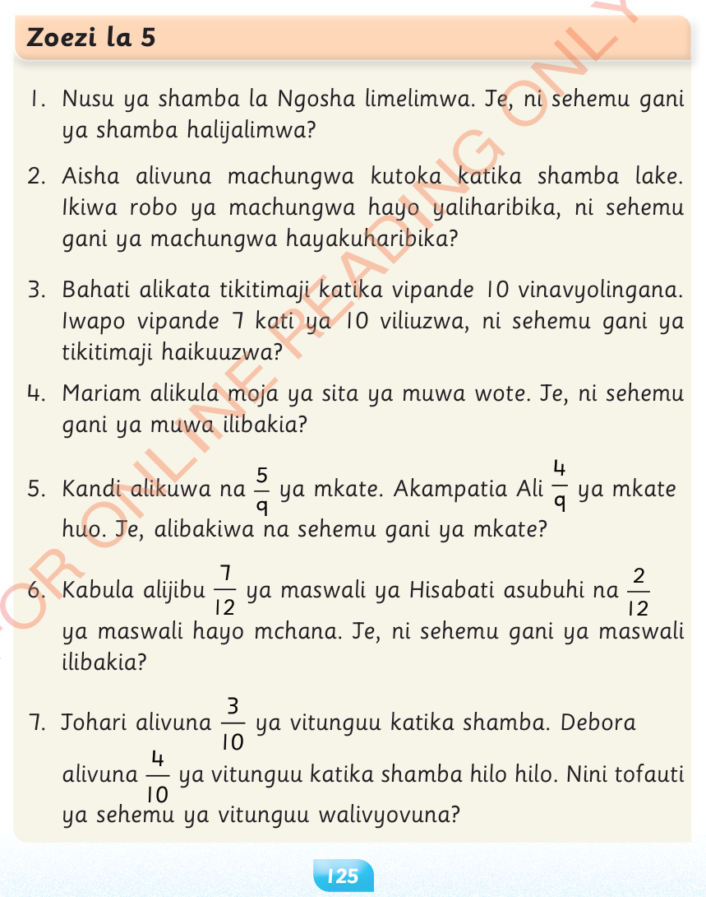

Zoezi la 5
1.
Nusu ya shamba la Ngosha limelimwa.Je, ni sehemu gani ya shamba halijalimwa?
2.
Aisha alivuna machungwa kutoka katika shamba lake.Ikiwa robo ya machungwa hayo yaliharibika, ni sehemu gani ya machungwa hayakuharibika?
3.
Bahati alikata tikitimaji katika vipande 10 vinavyolingana.Iwapo vipande 7 kati ya 10 viliuzwa, ni sehemu gani ya tikitimaji haikuuzwa?
4.
Mariam alikula moja ya sita ya muwa wote.Je, ni sehemu gani ya muwa ilibakia?
5.
Kandi alikuwa na ya mkate.Akampatia Ali ya mkate huo.Je, alibakiwa na sehemu gani ya mkate?
6.
Kabula alijibu ya maswali ya Hisabati asubuhi na ya maswali hayo mchana.Je, ni sehemu gani ya maswali ilibakia?
7.
Johari alivuna ya vitunguu katika shamba.Debora alivuna ya vitunguu katika shamba hilo hilo.Nini tofauti ya sehemu ya vitunguu walivyovuna?